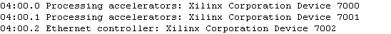
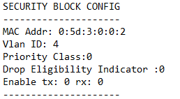
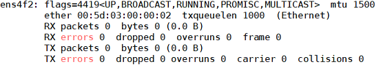
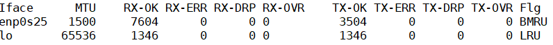
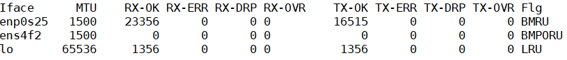
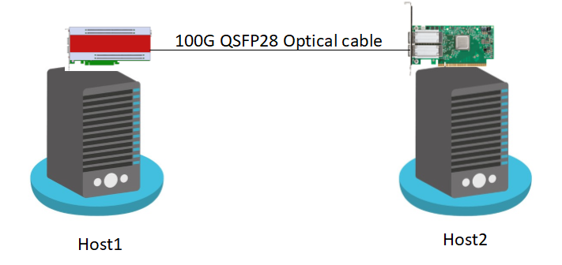

User Guide¶
This section describes the details on configuring QEP and running network traffic to confirm the working of the Platform and the driver.
Environment bringup¶
Installing the board¶
Shutdown the Host system and unplug it from its power source. Locate a Gen 3 x16 dual width PCIe slot on the motherboard and insert the Xilinx Alveo U250 board. Connect a USB cable between the host system and the U250 board.
Note: Follow the safety instructions listed in UG1301 while installing the card in the PCIe slot
Installing the Xilinx tools¶
- Power up the host system and login as root user
2. Download the Vivado Design Suite 2019.1 from https://www.xilinx.com and install it according to the instructions provided in UG973.
- Install Cable drivers by following the instructions from UG973.
Programming the QEP DSA¶
- Program the U250 board with QEP Platform deployment shell from the QEP Lounge.
- Once the device is programmed sucessfully with QEP Platform shell, execute the following command on the host system
#lspci -d 10ee:Following is the sample output

Building the driver software¶
Linux Driver software directory structure¶
Below Table describes the QEP Linux kernel network driver software database structure and its contents on the Xilinx GitHub https://github.com/Xilinx/qep-drivers, subdirectory linux-kernel.
| Directory | Description |
|---|---|
| driver | Linux kernel driver source code |
| RELEASE.txt | Release Notes |
Compiling Linux kernel network driver¶
Execute the following commands to install Linux headers, clone qep-drivers repo and compile the driver.
# sudo apt-get install linux-headers-$(uname -r) build-essential
# git clone https://github.com/Xilinx/qep-drivers.git
# cd qep-drivers/linux-kernel/driver
# make clean
# make
Compiling qep-ctl application¶
# cd qep-drivers/qep-ctl
# gcc qep_ctl.c -o qep-ctl
Loading/Unloading the Driver¶
Configuring Device MAC Address¶
- The Device MAC address must be configured before the driver can be loaded in to the Linux kernel. Configuring the Ethernet MAC address of the device is a priviliged operation that can be performed from Management PF using qep-ctl application.
#cd qep-drivers/qep-ctl #./qep-ctl config -d 04:00.0 -m 00:5D:03:00:00:02In this example 04:00.0 is the BDF of the Management PF. This command sets the MAC address of the network device but does not enable the MAC and VLAN filtering. The MAC address must be configured in the device everytime after a new bitstream is programmed. However it need not be configured after every driver unload and load sequence
Execute the below command to verify that the MAC address is set
#./qep-ctl show -d 04:00.0
Sample Output:
Refer to readme.txt in qep-ctl application for usage details.
Inserting the driver module¶
Execute the following commands to load the QEP Linux kernel module
#cd qep-drivers/linux-kernel/driver
#insmod qep_drv.ko
Upon successful insertion of the driver, a new network interface with the MAC address configured earlier is created that can be used for sending and receiving traffic.
To list all network interfaces, use the following command:
#ifconfig -a
Sample Output:

Check the dmesg logs to confim that the driver is inserted successfully without any errors.
Unloading Kernel Module¶
Execute the following command to unload the kernel module
#rmmod qep_drv
Check the dmesg logs to confim that the driver is unloaded successfully without any errors.
Validating the driver on baremetal host¶
Data Path Test in Loopback¶
This is a simple test by putting CMAC IP in loopback mode. In loopback mode, CMAC core puts the data coming on TX path onto its RX path. So, the packets sent on TX interface would be received on RX interface. The CMAC core can be put in loopback mode by driver module parameter loopback_en. Execute the below commands for this test.
- Install hping3 application on the host system
#apt install hping3
- Verify the network interfaces before inserting the driver
#ifconfig -s -a
Sample Output:

- Insert the driver in loopback mode
#insmod qep_drv.ko loopback_en=1
#ifconfig -s -a
Sample Output:
A new interface
ens4f2as shown above is created.
- Set IP address and send the network traffic using hping3 on the network interface
#ifconfig ens4f2 -arp #ifconfig ens4f2 192.168.1.10 #hping3 192.168.1.20 -I ens4f2 -2 -c 10 -d 64Verify that difference in number of TX-OK packet and RX-OK packet before and after executing the above hping3 command is the same. This confirms the successful bring up of the network driver.
- Remove the driver
#rmmod qep_drv.ko
Ping test with peer NIC¶
Ping test ensures connectivity with a peer NIC. Connect U250 board on Host1 with a peer 100G NIC card on Host2 with an optical QSFP28 cable.

Following are the steps to execute Ping test:
- Insert the QEP Linux driver on Host1
#insmod qep_drv.ko
- Set IP address on Host1 network interface and make the interface up using the following command
# ifconfig ens4f2 192.168.1.1 up
- Set IP address on Host2 network interface and make the interface up using following command
# ifconfig enp175s0 192.168.1.2 up
- From Host1 execute the following commands to check the connectivity with peer NIC
# ping -I ens4f2 192.168.1.2 -c 10 64 bytes from 192.168.1.2: icmp_seq=1 ttl=63 time=0.220 ms 64 bytes from 192.168.1.2: icmp_seq=2 ttl=63 time=0.274 ms 64 bytes from 192.168.1.2: icmp_seq=3 ttl=63 time=0.289 ms
Validating the driver in Virtual Machine¶
Update
/etc/default/grubfile as below to enable IOMMU.GRUB_CMDLINE_LINUX="iommu=pt intel_iommu=on cma=14096M@0-16G"
Note: If there are any failures related to dma_alloc_coherent() in the driver, then the memory reserved for “cma” can be increased further.
Execute the following command to modify the
/boot/grub/grub.cfgwith the configuration set in the above step and permanently add them to the kernel command line.update-grub
Reboot host system after making the above modifications.
2. Find the Vendor Id (e.g. 10ee) and Device Id (e.g. 5016) of the PCIe function being attached to VM using lspci command.
Add the Vendor Id and Device Id to vfio-pci configuration file /etc/modprobe.d/vfio.conf to bind the function to vfio-pci as below
options vfio-pci ids=10ee:5016Create the file
/etc/modprobe.d/vfio.conf, if it doesn’t exist already.
Insert the vfio-pci module
modprobe vfio-pci
On the host system, configure MAC address of the device from Management PF using qep-ctl application as outlined in section Configuring Device MAC Address
Start the VM using below command by attaching the network PF (04:00.2 in this example) to VM
qemu-system-x86_64 -cpu host -enable-kvm -m 24576 -smp sockets=1,cores=15 -hda vm_image.qcow2 -device vfio-pci,host=04:00.2 -vnc :1
Copy the Linux driver source code to the VM by executing below command from VM.
scp -r <username>@<host_ip>:<qep_linux_sources> <qep_linux_copy_path_in_vm>
Execute steps as outlined in section Compiling Linux kernel network driver to build the Linux driver on VM
Insert the driver module in VM as described in section Inserting the driver module
Perform Ping test to the peer NIC from the VM to confirm that the VM setup is successfully established, by following the steps in section Ping test with peer NIC
Ethtool command Usage¶
To check driver and device information of network interface
ethtool -i <interface>
To print statistics of network interface
ethtool -S <interface>
To query ring size values of network interface
ethtool -g <interface>
To modify Tx and Rx ring size of network interface
ethtool -G <interface> rx <Rx Ring Size> tx <Tx Ring Size>
Default number of Tx and Rx queues is the minimum of number of CPU cores and MSI-X vectors. To modify the number of Tx and Rx queues of network interface
ethtool -L <interface> rx <num channel> tx <num channel>
To change the coalescing settings of the specified network device
ethtool -C <interface> rx-usecs <N> rx-frames <N>
To dump all Tx/Rx packets of network interface
tcpdump -XX -i <interface>